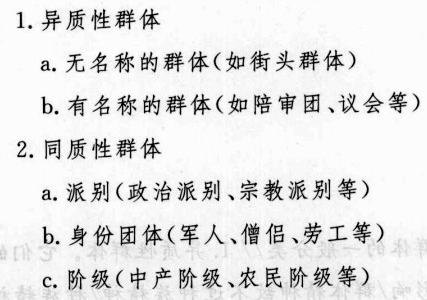

社会学经典名著， 群体心理学 名著。
这本书首次出版于1895年，之后的时光里在1914-1918年发生了第一次世界大战，
在1939-1945年发生了第二次世界大战。
导言：群体的时代
有时不真实的东西比真实的东西包含着更多的真理。
那些令人难忘的历史大动荡，发生在其背后的真正原因是：
人民的思想发生了深刻的变化，这些历史事件只不过是
人类思想不露痕迹的变化所造成的可见后果而已。
读后感总结之译后记(民主直通独裁的心理机制)：
= 民族时代的到来意味着：领袖要想号令天下，唯有反求于诸天下的"授权"，群众开始渐渐的成为了前台的主角。
+ 勒庞 最早阐明了 "个人在群体的影响下，思想和感觉中的道德约束与文明方式的突然消失，原始冲动、幼稚行为和犯罪倾向的突然爆发"
的实相！所以有的时候 我们不一定要完全相信 民主。
+ 是什么引发 传统社会 转型进入到 现代社会？
1. 传统的宗教、政治以及社会信仰的毁灭；2. 技术发明给工业生产所带来的巨变。
+ 我们就要进入的时代，千真万确将是个群体的时代，这个"群体的时代"表现在观念变迁上，最突出的特点就是：民主和社会主义观念的
广泛普及，这让所有持有保守主义和精英主义立场的勒庞深感恐惧。
+ 凡是读过《乌合之众》这本 篇幅不大的小书 的人，大概谁也不会否认，它虽然偏见很多，却是非常令人难忘的！
+ 个人参与到群体中来所表现出主要特征：
1. 群体中的个人会表现出明显的 从众心理；
2. 约束个人的道德和社会机制在狂热的群体中失去了效力。
+ 英雄与群体：群体本能的希望英雄表现出他们所不具备的高尚品格。
+ 根据勒庞的观察：夸大其词、言之凿凿、不断重复、绝对不以说理的方式证明任何事情，是说服群众的不二法门！
= 结语：群体的时代与民主
20世纪是个群众参政意识 普遍觉悟 因而也是个民主口号盛行的世纪，然而它同时又是个 "最血腥的世纪"。
从事实的角度来看，世上一切的伟人，一切宗教和帝国的建立者，一切信仰的使徒和杰出政治家，甚至再说的平庸
一点，
一伙人里的小头目，都是不自觉的心理学家，他们对于群体性格有着出自本能但往往十分可靠的了解。
正是
因为对这种性格有正确的了解，他们能够轻而易举的确立自己的
领导地位。
所以要想领导群众，不能根据建立在纯粹平等学说上的原则，而是要去寻找那些能让他们心动的事情，能够诱惑他
们的东西。
群众目光是短浅的，所以一旦遇到需要进行长远计算和考虑的手段时，他们就力所不及了，只能任人宰
割。
【比如：税制的制定 以及 网费按月交还是按年交的问题等，群众总是只能接受短期内的缴费而很难接受一次性交出一大笔钱。】
真正的历史大动荡，并不是那些以其宏大而又暴烈的场面让我们吃惊，而是它影响到了 思想，观念和信仰的变化。
创造和领导着文明的，历来就是少数知识贵族 而不是群体，群体只是拥有强大的破坏力，他们的规律永远就是回到野蛮阶段。
当一个文明结构摇摇欲坠之时，使他倾覆的总是群众。
第一卷 群体心理 【研究心理群体的精神结构】
第一章 【
心理群体】的一般特征
【这里强调的是 从
心理学角度来看的群体：
聚集成群的人，他们的特征：
① 感情和思想全都采取同一个方向，他们
②自觉的个性消失了，就形成了一种
集体心理！
作者称之为："一个组织化的群体"或称之为
"一个心理群体"。这个心理群体会受到
群体精神统一定律的支配！
】
= 心理群体所表现出来的最惊人的特点：使其中的个人获得了一种
集体心理，这种集体心理与他们单独一人时颇为不同。
= 现代心理学所确认的事实是：
无意识现象不但在有机体的生活中，而且在智力活动中，都发挥着一种完全
压倒性的作用。
无意识构成了种族的先天禀性。
= 在集体心理中，个人的才智被削弱了，从而他们的个性也被削弱了，异质性被同质性所吞没，无意识的品质占了上风。
+ 心理群体 具有但是个人不具有的特征形成
所依赖的几个原因：
1.
群体是个 无名氏，因此也不必承担责任。所以用群体的思维，总是约束着 个人的责任感便彻底的消失了；
2. 传染 的现象，在群体中，每种感情和行动都有传染性，其程度足以使个人随时准备为集体利益牺牲自己的个人利益；
3. 易于接受暗示，在某种暗示的影响下，群体中的个人会因为难以抗拒的冲动而采取某种行动。
+ 总结：组成
心理群体 的个人所表现出来的
主要特征：
1. 有意识人格的消失，无意识人格的得势，思想和感情因为 暗示和相互传染作用 而转向了同一个共同的方向；
2. 有 立刻把暗示的观念转化为行动的倾向。
他已不再是他自己，而是变成了一个不再受自己意志所支配的玩偶。
= 结论：群体在智力上总是低于孤立的个人，但是从感情以及行动上
往往表现的 既可能比个人好 也可能差。
犯罪群体和英雄主义群体完全是取决于该群体所接受的暗示具有什么样的性质。
群体的智力虽然变得比个人差，但是它所采取的行动 会因为群体所接受的暗示的不同，而表现的比个人好！
第二章 群体的感情和道德观
+ 心理群体 的主要特点的细节：
1. 冲动、多变和急躁； 2. 易受暗示和轻信； 3. 情绪的夸张与单纯； 4. 偏执、专横和保守； 5. 道德高尚或低劣。
=
群体的冲动，多变性,易变性和急躁，使得它们变得难以统治，当公共权力落到它们手里时更是如此。
在它们的心里，觉得就没有不可能的事情存在！
因为群体的概念，使得处于群体中的人因为数量上的强大感到自己势不可当，
所以会变得无法理解愿望与实现愿望之间的障碍，从而使得自己变得 易于冲动。觉得一切皆有可能！
种族的基本特点 是我们产生一切情感的不变来源，是 冲动、多变和急躁 的心理群体形成的温床。
【比如：中国有段时间因为钓鱼岛事件，引发的 打砸日货，抵制日货 的所谓的民族活动，就是很冲动的愚蠢行为！】
= 群体的 易受暗示和轻信，群体总是处于一种期待注意的状态，因此很容易受人暗示。进入大脑的念头很容易转变成为行动。
在心理群体中，不可能的事不可能存在。
群体中某个人对真相的第一次歪曲，是 传染性暗示过程 的起点。
导致群体出现集体幻觉 的暗示的起点：一般都是某个人多少有些模糊的记忆所产生的幻觉，在这一幻觉得到肯定之后，
就会引发这种幻觉在群体中的 相互传染。群体中的其他观察者这时看到的就不再是客体
本身，而是他 头脑中所产生的幻象！
【启发：以后再遇到一种类似情况时，自己一定要有主见，不要轻信别人的描述，不要轻相自己头脑中未经证实的幻象！】
= 群体表现出来的感情不管是好是坏，其突出的特点就是 极其简单而夸张
群体情绪的简单和夸张的结果是：它全然不知怀疑和不确定性为何物，容易陷入极端。
群体感情的狂暴，会因责任感的彻底消失而得到强化。意识到肯定不会受到惩罚(而且人数越多，这一点就
越肯定)，以及因为人多势众而一时产生的力量感，会使得群体表现出一些孤立的个人所不可能有的情绪和
行动。所以，群体很容易干出最恶劣的极端勾当。
群体因为夸大自己的感情，所以它只会被极端感情所打动。希望感动群体的演说家，必须出言不逊，信誓旦旦。夸大其词、言之
凿凿、不断重复、绝对不以说理的方式证明任何事情。
= 群体的保守本能是坚不可摧的。他们对一切传统的迷恋与崇敬是绝对的，他们对一切有可能改变自身生活基本状态的新事物，
有着根深蒂固的无意识恐惧。
= 群体的道德 取决于它们受到了什么样的暗示的影响
群体虽然经常放纵自己低劣的本能，他们也不时的树立起崇高的道德行为典范。
【比如：2015年闹的比较凶的 ISIS-伊斯兰国群体，就是一群典型的乌合之众[群体的无意识行为以及动物性本能发挥的淋漓尽致]】
第三章 群体的观念，理性与想象力
P75
+ 心理群体的观念 特点：相互矛盾的观念能够并存，群众并不能接受高深的观念，观念的影响与其是否包含真理无关；
+ 心理群体的理性 特点：群体不受理性的影响，群体只有十分低下的推理能力，所接受的不过是表面上看上去一致的东西；
+ 心理群体的想象力特点：强大的形象逻辑想象力(内部不一定具有逻辑关系)，易被神奇事物感动等。
第一次世界大战：
资本主义国家 向 帝国主义 过渡时产生了广泛的不可调和矛盾，各个帝国主义经济发展不平衡，秩序划分不对等的背景下，
为重新瓜分世界和争夺全球霸权 而爆发的一场世界级的 帝国主义战争！
第二次世界大战：
随着帝国主义国家之间的经济、政治和军事发展不平衡加剧，军事实力发展较快的德意日三国要求重新划分世界势力范围，
使得帝国主义之间的矛盾变得进一步的尖锐起来。
= 每一种文明都是屈指可数的几个基本观念的产物，这些观念很少受到革新，它在群众心中根深蒂固。一旦这
些
基本观念发生了变化，那么就会引发社会的大动荡！【本书成形于一战前】
= 群体的推理方式也要借助于观念，群体推理的特点是：
把彼此不同的，只是表面上相似的事物搅合在一起，
并且立刻把具体的事物普通化。
= 让一个观念在群众的头脑中扎根需要很长的时间，而要想根除它们所需要的时间也同样短不了。
今天的政客都十分清楚，即使群众现在所仰望的观念中混杂着错误，由于这些观念的影响力依旧十分强大，
他们也不得不根据自己已经不再相信的 "真理”中的原则来进行统治。
+ 群体推理的特点：
把彼此不同，
只在表面上相似的事物容易搅在一起，并且立刻把具体的事物普遍化。
知道如何操纵群体的人，给他们提供的也正是这种论证。
= 群体没有逻辑推理能力，不能辨别真伪或对任何事物正确的判断，群体所接受的判断仅仅是强加给他们的判断，
而不是他们经过讨论后得到采纳的判断。
+ 有些意见能够轻而易举的就得到普遍的赞同，更多的原因是大多数人感到：他们不可能根据自己的推理形成自己的独特看法，
所以只能人云亦云。
= 群体的想象力是形象的，只会形象思维的群体，也只能被形象所打动。只有形象能吸引或吓住群体，成为他们
的行为动机。
所有时代的伟大政客(包括专横的暴君等)，也都把群众的想象力视为他们权力的基础，他们从来没有设想过与它
作对而进行统治。
名言警句：
"我通过改宗天主教，终止了旺代战争；通过变成了一个穆斯林教徒，在埃及站住了脚；通过成为一名信奉教皇
至上的人，赢得了意大利神父的支持。
如果我去统治一个犹太人的国家，我也会重修所罗门的神庙" —— 拿破仑。
=
影响民众想象力的，并不是事实本身，而是它们发生和引起注意的方式。
掌握了影响群众想象力的艺术，也就掌
握了统治他们的艺术。
第四章 群体信仰所采取的宗教形式
+ 宗教感情的意义： 不取决于对某个神的崇拜；
+ 宗教感情的特点： 强大的信念。
= 群体并不进行推理，它对观念 或是全盘接受或是完全拒绝。
= 一切宗教和政治信条的创立者 之所以能够站得住脚，皆因为他们 成功的激起了群众想入非非的感情。
(心理) 群众不管需要别的什么，他们首先需要一个上帝。
一切政治，神学或社会信条，要想在群众中扎根，都必须采取 宗教的形式——能够 把危险的讨论 排除在外的形式。
即便有可能使得群众接受无神论，这种信念也会表现出宗教情感中的所有偏执，它很快就会表现为一种崇拜！
= 历史上的一些大事件都是受到宗教感情激励的群众所为，凡是怀有这种情感的人，必然会用火与剑去清除那些反
对建立新信仰的人。在这些事件的深处，从可以找到的绝不是统治者的权力，而是群体灵魂的运作。
第二卷 群体的意见与信念 【了解心理群体的 意见和信念 是如何形成的】
第一章 群体的意见与信念的 间接因素 (一种新信念产生的基础)
+ 群体信念的准备性因素：1. 种族；2.传统；3. 时间；4. 政治和社会制度；5. 教育。
= 种族：一个种族的信仰，制度和艺术，总之它文明中的一切成分，仅仅是它的气质的外在表现。
一个种族 ==决定==> 群体的气质 ==决定==> 文明中的一切成分。
任何一种元素，从一个民族传播给另一个民族时 都会经历深刻的变化。
种族决定着一个群体的气质特征，从而导致不同国家的群体表现出相当不同的信念和行为，受到其影响的方式也各不相同。
= 传统：表示一个群体过去的观念、欲望和感情。
没有 传统，文明是不可能的；没有对这些传统的破坏，进步也是不可能的。困难在于：如何在稳定和求变之间取得平衡。
过去的中国使得自己的习俗和传统变得过于牢固，所以它基本不会再发生什么变化，所以 过去的中国一直长时间的处于
封建社会制度中长达到2100多年【从公元前221年秦统一六国，一直到 1911年辛亥革命推翻了清政府】。
这就是由于牢固的中央集权等制度导致 民族传统 变得没有改进能力。在这种情况下，即使是暴力革命也没有多少用处，因为
由此造成的结果，或是 将传统的锁链打碎然后又被重新拼接在一起，整个过去又被原封不动的再现，要么就是对打碎的事物
撒手不管，很快衰败成为一个无政府状态。
= 时间：它是唯一的真正创造者，也是唯一的伟大毁灭者。
为了看到一切事物有何变化，我们应当让它自由的发挥作用。
= 政治和社会制度：制度能够改正社会的弊端，改进制度与统治可以为一个国家带来进步。
--------------------------------------------------
= 关于教育
教育既不会使人变得更道德，也不会使他更幸福，它既不能改变他的本能，也不能改变他天生的热情，而且有时只要进行不良
引导，害处反而会远大于好处。
教育在正确的引导下，也会产生十分有益的实际结果。比如：它虽然不能提升道德水平，但是它可以提升人的专业技能。
"学习课程，把一种语法或一篇刚要 牢记于心，重复的好，模仿的也出色，这实在是一种十分可笑的教育方式。它的每项工作
都是一种信仰行为，即：默认教师不可能犯错误！这种教育的唯一结果，就是贬低自我，让我们变得无能！"
-------------
这种教育制度的危害是使得服从它的人强烈的厌恶自己的生活状态，极想逃之夭夭，工人不再想做工人，农民不再想当农民，
大多数地位卑贱的中产阶级除了吃国家职员这碗饭之外，不想让他们的儿子从事任何别的职业！
国家用教科书制造出这么多有文凭的人，然而它只用其中的一小部分，于是只好让另一些人无事可做，被选中的人是有限的，
因此肯定有大量心怀不满的人，这是很危险的！所以说："掌握一些派不上用场的知识，是让人造反的不二法门"！
-------------
受过教育的无业大军，被视作一个民族真正的灾难。
很多人以为这种教育尽管会培养出心怀不满和不适应自己生活状况的人，但是它通过向人灌输大量肤浅的知识，不出差错的
背诵大量教科书，毕竟可以提高智力水平。
但是它真能帮助我们提高智力水平吗？不可能！生活中取得成功的条件，是判断力、经验，是 开拓精神和个性。
--------------------------------------------------
第二章 群体意见的 直接因素 (一种新信念能够被执行的直接导火索) P111
+ 群体意见的直接因素：1. 形象、词语和套话； 2. 幻觉； 3. 经验； 4. 理性。
= 群体就像古代神话里的斯芬克斯，必须对它的心理学问题给出一个答案，否则我们就会被它毁掉。
= 形象、词语和套话
词语 ==激活==> 形象 ==影响==>群体的想象力。
词语的意义会随着时代的变迁而发生深刻地变化。词语只会有变动不定的暂时含义，它会随着时代和民族的不同而变得意义不同。
我们要想用词语来影响群体，就必须弄清楚对于特定的这个时候，特定的这个群体，这个词语到底被赋予了什么样的意义！
--------------------------------------------------
= 如何用 词语(名称) 管理群体
当一个群体因为政治动荡或者信仰变化，对某些词语所唤起的形象深感厌恶时，
假如事物因为与传统结构紧密联系而无法改变，
那么一个真正的政治家要做的当务之急，就是在不伤害事物本身的同时，赶紧变换说法！
执政府和帝国的具体工作：就是用新的名称把大多数过去的制度重新包装一遍，也就是说，用新名称代替那些能够让群众想起不利
形象的名称！因为这些新名称的新鲜能够防止群众产生这种不好的联想！
举例："地租" -> "土地税"， "盐赋" -> "盐税"，"徭役" -> "间接摊派"，商号和行会的税款 -> "执照费"，等等。
名称的威力如此强大，如果选择得当，它足以使最可恶的事物改头换面，变得能被民众所接受！
统治者的艺术，就像律师的艺术一样，首先在于 驾驭辞藻 的学问。
--------------------------------------------------
= 幻觉
推动各个民族演化的主要因素，永远不是真理而是 谬误。因为谬误有时可以让群众产生幻觉。
群众从来没有渴望过真理，面对那些不合口味的证据，他们会拂袖而去，假如谬论对他们有诱惑力，他们就会更愿意崇拜谬论。
【联想：共产主义的新世界，就是这样一个敢于无视现实大胆向人类承诺幸福的人(马克思) 所提出来的"谬论"，
但是它确实在推动者中国的发展。】
= 经验
经验几乎是唯一能够让真理在群众心中牢固扎根，让过于危险的幻想归于破灭的有效手段！
为了让幻想破灭，必须要让群众得到经验，由此就必须要在社会中做大量的实验。
要想明白一个社会不应当遵照纯粹理论的指导，想要从上到下让社会翻新一遍，必须有数百万人为破除旧幻想而死于非命。
比如：为了证明独裁者会让拥戴他们的民族损失惨重，法国曾经做过两次破坏性实验：第一次是法国大革命，这次试验的代价是
300万人的性命和一次入侵，第二次试验的代价是 导致领土割让以及让群众意识到常备军的必要性。
= 理性
群体不受理性的影响，逻辑定律对群体不起任何作用！要想影响群体也无须借助于逻辑规则！
要让群体相信什么，首先得搞清楚让它们兴奋的感情，并且装出自己也有这种感情的样子，然后再以很低级的组合方式，
用一种非常著名的暗示性概念去改变它们的看法。
举例：在巴黎围困时期，有一天，有一群愤怒的人把一个将军押到当时的政府驻地卢浮，因为他们怀疑是他把设防计划卖给了
普鲁士人。一位政府官员，他本身是一位非常出色的演说家，出来斥责那些要求立刻处死这名囚犯的人。
如果以逻辑规则为基础，他可能会说 这种指控是很荒谬的，因为这个军官实际上就是设防人之一，并且这种设防计划在
每个书店里都能买到。
但是他没有这么说，而是对这群人说："正义会得到伸张的，正义铁面无私。让护国政府来决定你们的请求吧。期间我们
会把他监禁起来。" 愤怒被这种让步所平息，人群也立刻散去了。再过十几分钟之后这个将军便回到家中。
如果同感情进行对抗，那么理性就会显得很苍白无力。
幻觉引起的激情和愚顽，激励着人类走上文明之路。在这方面人类的理性没起到多大的作用。
所以从某种意义上来说，迷信、宗教 这些不符理性的东西，永远也不会湮灭。
一切文明的主要动力并不是理性。尽管存在着理性，但文明的动力仍然是各种情感
(譬如尊严、自我牺牲、宗教信仰、爱国主义、荣誉感等)。
第三章 群体领袖及其 说服的手法 (如何运用这些直接因素调动群体) P124
+ 群体领袖：一切群体动物都有着服从头领的本能需要。
领袖的动员手段：断言、重复 和 传染。民众的意见不久就会成为普遍意见。
名望：名望的定义与产生，名望受到破坏的方式。
= 群体的领袖
不管他们坚持的观念或追求的目标是多么的荒诞，但是他们的信念是如此的坚定，这使得任何理性思维对他们都不起作用！
各民族从来就不缺少领袖，但是他们也并非全部都有着强烈信念的激励，这些领袖往往都谙熟于 巧言令色 之道。
群体的领袖可以分成两大类：
1-那些充满活力，但是只是拥有一时的坚强意志的人；
2-具有更持久意志力的领袖。
强大而持久的意志力能够做什么？看看苏伊士运河这项人类伟大的工程的建造过程就可以体会得到！
= 领袖的动员手段：断言、重复和传染
想要让群体在很短的时间内 激发起群体的热情，就必须让群体对暗示做出迅速的反应，其中效果最大的就是 榜样作用！
断言法：一个简洁有力的断言，不理睬任何推理和证据，是让某种观念进入群众头脑最可靠的方法之一。
重复法：如果没有不断地重复断言，它仍然不会产生真正的影响。最为重要的修辞手法只有一个，那就是重复。
传染性：如果一个断言得到了有效的重复，在这种重复中就会形成传染的特性，最终形成所谓的流行意见。
不断重复的说法会进入我们无意识的自我深层区域，而我们的行为动机正是产生于此。
传染性 本身也是群体的一个重要特征，在聚集成群的人中间，所有情绪都会迅速的传染，这也解释了 恐慌 的突发性。
= 名望
利用 断言、重复和传染 进行普及的观念，因为环境而获得了巨大的威力，这是它们就会具有一种神奇的力量，那就是名望！
在现实中，名望 是 某个人、某本著作或是某种观念 对我们头脑的支配力！名望是一切权利的主因！
名望可分成两大类：1. 先天名望；2. 个人名望。
先天名望来自称号，财富和名誉：
这个很好理解：一个人占据着某种位置，拥有一定的财富或头衔，仅仅是这些事实，就能使他享有名望，不管他本人多么
没有价值。
名望的特点就是：阻止我们看到事物的本来面目，让我们的判断力彻底麻木！
个人名望与一切头衔和权利无关，它是一种只有极少数人所具备的品质，有时具备这种能力的人会显得具有旁人难以理解的魔力。
举例：拿破仑在没有得到他的权利之前，凭借着自己的个人名望也得到了极大的成功。
名望的产生与若干因素有关，而成功永远都是其中最重要的一个。成功是通向名望的主要台阶。
享有名望的人、观念或物品，会在传染的作用下，立刻受到人们不自觉的模仿，使得整整一代人接受某些感情或者表达思想的模式。
名望受到破坏的方式：1. 缺少成功；2. 当名望受到探讨，成为问题时，便不再是名望了。
为了能够长期保持名望，需要对探讨毫不容忍，为了让群众敬仰，必须同它保持距离。
第四章 群体的信念与意见的变化范围
+ 牢固的信念：信念不易改变； 群众意见的多变：不是来自信念的意见极为易变。
= 牢固的信念
通常要想根除一种信念，极其不易，通常只有用 暴力革命 才能对它们进行革新。一场革命的开始，其实就是一种信念的末日。
一种信念开始衰亡的确切时刻很容易辨认，那就是：它的价值开始受到质疑！
普遍的信念从哲学上来说往往十分荒谬，但这从来不会成为它们获胜的障碍！相反，如果这些信念缺少了这种提供某种神奇的
荒谬性 这一条件，它们反而不可能获胜。
因此，今天的共产主义信念虽然有明显的破绽，但这并没有阻止它们赢得群众。
= 群众意见的多变
群众意见是建立在比较牢固的信念的基础之上的。它的特点就是多变。
第三卷 不同群体的分类及其特点
第一章 群体的分类
+ 群体的一般性分类：1. 异质性群体，2. 同质性群体。
不同种族的人群 -> 同一种族的人群

= 异质性群体
种族的气质对群体性格有着重大影响。
= 同质性群体
派别是同质性群体组织过程的第一步。
第二章 被称为犯罪群体的群体
= 群体犯罪的动机是 一种强烈的 暗示，参与犯罪的个人事后会坚信他们的行为是在履行责任，这与平常的犯罪大不相同。
= 我们会服从别人的怂恿，它会因为来自集体而变得更为强大。
第三章 刑事案件的陪审团
= 陪审团 是有名称的异质性群体的一个很好的例子。
= 但陪审团就像其他群体一样，也受到感情因素极强烈的影响，孤儿寡母的凄凉处境很容易打动陪审团的慈悲心肠。
= 杰出律师 的主要用心所在，就是打动陪审团的感情，而且正如对付一切群体一样，不要做很多论证，或只需采用十分
幼稚的推理方式。
= 但是陪审团制度的存在是为了缓解法律的严酷性！
这种对任何人一视同仁的法律，从原则上来说既不考虑也不承认特殊情况，法官是冷漠无情的，他除了法律条文之外
不理会任何事情，出于这种职业的严肃性，他对因为受到诱奸者的抛弃而杀婴的可怜姑娘，会施以同样的刑罚。
而陪审团会本能的感受到，与逃避法网的诱奸者相比，被诱奸的姑娘的罪过要小很多，对她应该宽大处理。
从有身份群体中我们还能找回清白的机会，而对一个个人想让他认错的机会确实微乎其微，这就是有身份的群体的
好处。
第四章 选民群体
= 选民群体就是有权选出某人担任官职的集体，也属于异质性群体。
= 在拉选票的时候，这种群体特性就需要很好的利用，我们列举过的那些常见的领袖的 动员手段：断言、重复和传染
就是发挥作用最好的时候。
= 说服选民的办法：
1. 候选人应当享有名望；
能够取代个人名望的只有财富，才干甚至是天才都不是非常重要的成功因素！所以通常选举都很费钱。
2. 享有名望的候选人必须能够迫使选民不经讨论就接受自己。
选民特别在意候选人所变现出来的 贪婪和虚荣，他必须以最离谱的哄骗手段才能征服选民，要毫不犹豫的向他们作出
最令人异想天开的许诺。
（用刀剑成就的事情，同样可以通过言语的力量达到，像不义之财、卑鄙的剥削者、可敬的劳工、财富的社会化等之类的
说法，总能够打动选民的心，尽管这些词已经被用的有些陈腐。）
第五章 议会
+ 议会中的群体表现出 异质性群体的主要特征：头脑简单、多变、易受暗示、夸大感情以及少数领袖人物的主导作用等。
= 议会是另一种典型的有名称的异质性群体的范例！
= 领袖的影响力只有很小的程度上是出于他们提出的论据，而在很大程度上来自于他们的名望。享有足够名望的领袖
几乎掌握着绝对权力。
= 我们多次谈到 词语和套话 的特殊力量，在措辞的选择上，必须以能够唤起生动的形象为准。
喋喋不休的说些最离谱的大话，永远对领袖有利。
☆ 对人类之前的文明的伟大和衰败的原因加以评价，我们会发现：
野蛮人时代，不同 种族 之间的通婚再加之拥有某种共同的理想而形成了 民族 ，随着民族中共同理想的不断消亡，民族在日益
失去其使自己团结强盛的能力，随着个人的个性和智力的增长，这些被个人利益和愿望搞得四分五裂的人，已经失去了治理自
己的能力，所以在最微不足道的事情上也需要领导，于是 国家 就出现了。